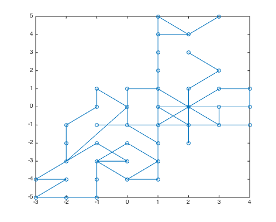
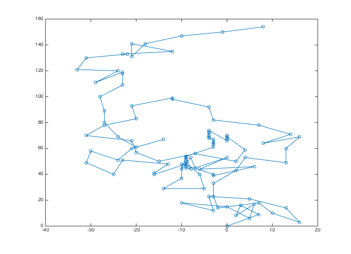

t_eyemovement
Illustrates how to create an eye movement and attach it to a sensor object.
NOTES: 1) Add code to illustrate microsaccade and frequency parameter change effects
HJ Vistasoft Team, 2014
Contents
Human sensor and eye movement structure
sensor = sensorCreate('human');
Create the eye movement object.
em = emCreate; % Attach it to the sensor sensor = sensorSet(sensor, 'eyemove',em); % This is the position every millisecond. In this case, 0.5 sec. sensor = sensorSet(sensor,'positions',zeros(1000,2)); % Create the sequence sensor = emGenSequence(sensor);
Plot the eye movement path
These are the sensor positions every 1 ms
pos = sensorGet(sensor,'positions'); % We always move the eye by one cone position vcNewGraphWin; plot(pos(:,1),pos(:,2),'o-')
Adjust the eye movement parameters
Make the tremor much bigger
amp = emGet(em,'tremor amplitude'); em = emSet(em,'tremor amplitude',10*amp); sensor = sensorSet(sensor,'eye movement',em); sensor = emGenSequence(sensor);
Plot the eye movement path
These are the sensor positions every 1 ms
pos = sensorGet(sensor,'positions'); % We always move the eye by one cone position vcNewGraphWin; plot(pos(:,1),pos(:,2),'o-')